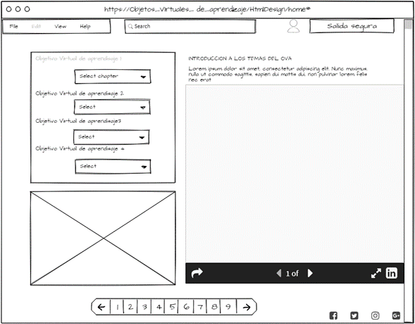

La interfaz de usuario,
Interfaces de usuario adaptativas basadas en modelos y agentes software
En la última década se ha realizado un gran esfuerzo en la investigación de
métodos que permitan la inclusión del diseño de la interfaz de usuario dentro
de un proceso de desarrollo basado en modelos, intentando obtener beneficios
tales como la automatización de la generación de la interfaz de usuario,
la generación de dicha interfaz para distintos dispositivos o lenguajes
a partir de unos modelos comunes o la mejora de las propiedades de usabilidad del sistema,
Sin embargo, el avance tecnológico la aparición de dispositivos que
suponen un cambio importante en la forma en que el usuario interactúa con los sistemas.
Jaquero, V. M. L. (2005). Interfaces de usuario adaptativas basadas en modelos y agentes software.
Universidad de Castilla-La Mancha. Recuperado de: https://dialnet.unirioja.es/servlet/tesis?codigo=19147
Diseño Web Centrado en el Usuario: Usabilidad y Arquitectura de la Información
La importancia del diseño de la aplicación se basa en que éste será el que modele la interacción
entre usuario y aplicación, y por tanto posibilitará o no la consecución de los objetivos perseguidos
por el usuario (encontrar información, comprar, comunicarse, aprender...).
Hassan, Y., Martín Fernández, F. J., & Iazza, G. (2004). Diseño Web Centrado en el Usuario: Usabilidad y Arquitectura de la Información. Hipertext.Net, (2). Retrieved from http://eprints.rclis.org/8998/
Interacción Humano Ordenador
Evolución y tendencias en la interacción persona–ordenador
La autora resume en este artículo los diversos hitos en la historia de la interacción persona–ordenador,
desde sus inicios a la etapa actual, en base a tres factores: la creatividad humana, la evolución de la tecnología
y el uso de los ordenadores. En la etapa actual (a partir de 1989) el artículo analiza la influencia del entorno www
y de la computación ubicua, nuevo paradigma computacional de gran impacto en la interacción persona–ordenador.
Finalmente presenta algunas tendencias que empiezan a configurar la interfaz post–WIMP
Ribera Turró, M. (2005). Evolución y tendencias en la interacción persona–ordenador.
Retrieved from http://biblioteca.udgvirtual.udg.mx/jspui/handle/123456789/1373
¿Está cambiando la forma de impartir docencia?
¿Deberíamos cambiarla? Interacción Persona Ordenador
Nadie pone en duda, al menos en el contexto de la Educación Superior (y sería factible extrapolarlo a otros niveles
educativos y otras formas de enseñanza/aprendizaje diferentes a la educación formal), que las TIC tienen un papel
clave hoy en día en las instituciones educativas, tanto en la dimensión de gobierno como en las metodologías docentes
(García-Peñalvo, 2008).
Peñalvo, F. J. G. (n.d.). ¿Está cambiando la forma de impartir docencia? ¿Deberíamos cambiarla? Interacción Persona Ordenador.
Retrieved February 23, 2021, from Usal.es website:
https://gredos.usal.es/bitstream/handle/10366/125387/GRIAL_GarciaPenalvo_Mesa-IPO-VersionRepositorio.pdf?sequence=1
Creacion del Mockup de la página principal del sitio web

